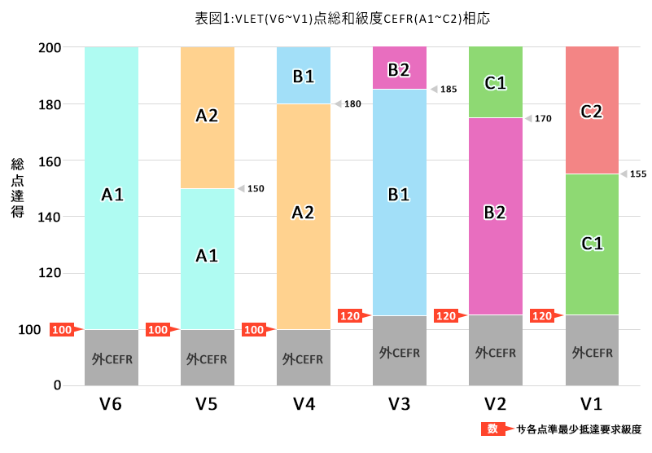

穹参照能力
㗂越 VLET
得磋𥩯𥄮
打價和摹写
程度使用㗂越
𧵑人学。
系統㖠
参考模型分級
𧵑CEFR，
一穹打價
能力外語
得使用
広𪶩
𨑗世界。
Common European Framework of Reference for Languages (CEFR))
𪜀穹参照
衆洲欧
撝能力言語。
低𪜀系統標準
国際得公布
年 2001 𪜀 Council of Europe
𥄮摹写和
打價
程度使用
外語
𧵑人学。
CEFR 𬨟能力外語
成 6 級度：
A1，A2 – 程度基本
B1，B2 – 程度中級
C1，C2 – 程度高級
(中𪦆 C2 𪜀
級度高弌)
每級度得
摹写憑
各能力具体，
譬喻如
人学固体
読，𦖑，呐
或曰得
仍咦中実際。
𫼰系統摹写
㖠，程度外語
固体得
打價和
𢫘𠁔
一格統弌
𡧲各国家。
現𫢩 CEFR
㐌得訳
𫥧欣 40 言語
和得使用
広𪶩
中教育，
講𠰺和
打價
外語
𨑗全世界。
方法対照
𡧲結果
𧵑期試 VLET –
其施打假
能力㗂越
吧各急度
𧵑 CEFR 得磋𥩯
𢭸𨑗規程
設立準打價(standard setting)。
中過程㖠，
各專家中和
外囦固
見識溇撝 CEFR，
考試言語和
過程発展
能力𧵑人学
外語㐌
参加打價
各句𠳨
中俳試 VLET。
具体，各專家
進行覘察
各句𠳨
属各份技能如：
読曉
𦖑曉
同時確定墨度
相応𧵑曾
句𠳨遶
各級度𧵑 CEFR (A1 – C2)。
𡢐欺完成
過程打價，
各与料
收得得
進行分析統計
抵確定各
仰点(cut-off score)
𨑗梯点
総𧵑期試 VLET。
仍仰点㖠
得使用抵
確定墨参照 CEFR
相応𠇍結果
𧵑試生。
𫼰方法㖠，
結果𧵑期試 VLET
固体得対照
𠇍標准
国際 CEFR，
𠢞役打價
能力㗂越
𨔾𢧚
客観，明白
和易𢫘
𠁔𨑗
範囲国際。
役顕示参照級度 CEFR 中期試 VLET 得実現𢭸𨑗総点実際如𡢐：

(1)條件顕示
級度 CEFR 衹得顕示対𠇍仍試生達結果達要求𧵑曾級度 VLET。𠮩試生空達墨点最少於不其份試芾，級度 CEFR 𫪣空得顕示。
(2)帰𢬭具体𢭸𨑗総点 VLET
| VLET 級 |
点数 |
CEFR 級 |
| V6 | 100 - 200 | A1 |
| V5 | 100 - 149 | A1 |
| 150+ | A2 |
| V4 | 100 - 179 | A2 |
| 180+ | B1 |
| V3 | 120 - 184 | B1 |
| 185+ | B2 |
| V2 | 120 - 169 | B2 |
| 170+ | C1 |
| V1 | 120 - 154 | C1 |
| 155+ | C2 |
(3)性質参照
級度 CEFR 顕示止忙性質參照朱各能力得都量中其施 VLET，包歉：見識言語(字曰，慈彙，語法)，読曉和𦖑曉。各技能空得試如呐和曰空得并𠓨結果㖠。